기본 샘플 UX 검증 캡처
검증 기록이며 실행 앱이나 Demo가 아닙니다. Windows CI / 실제 ASGI 연결 / 합성 사용자 데이터. 실제 OS DPI 증거가 아닙니다.
최종 보고서
독립 AI 이미지
1920px viewport
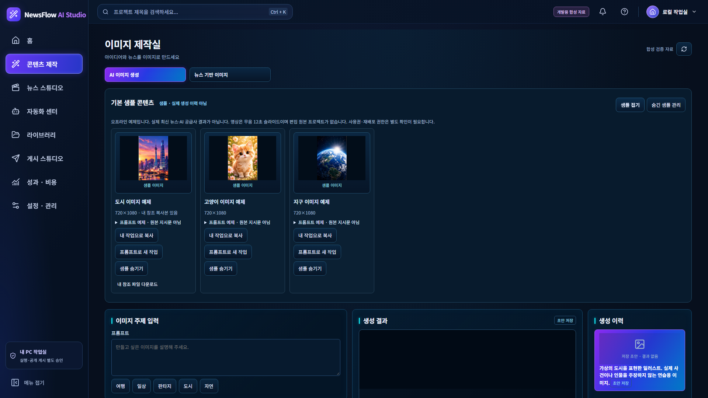
1366px viewport
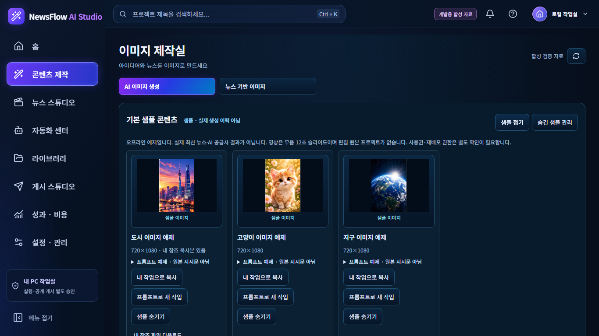
뉴스 TOP3 이미지
1920px viewport
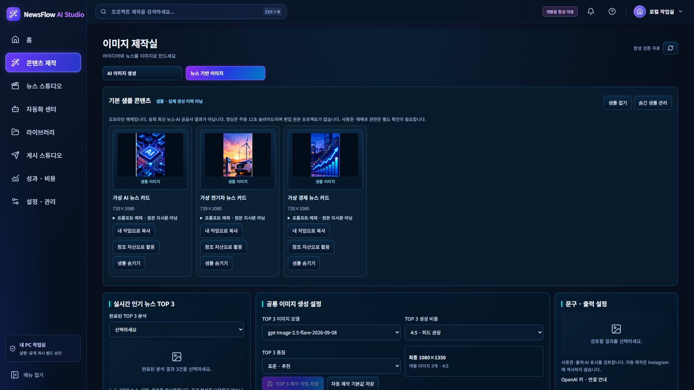
1366px viewport
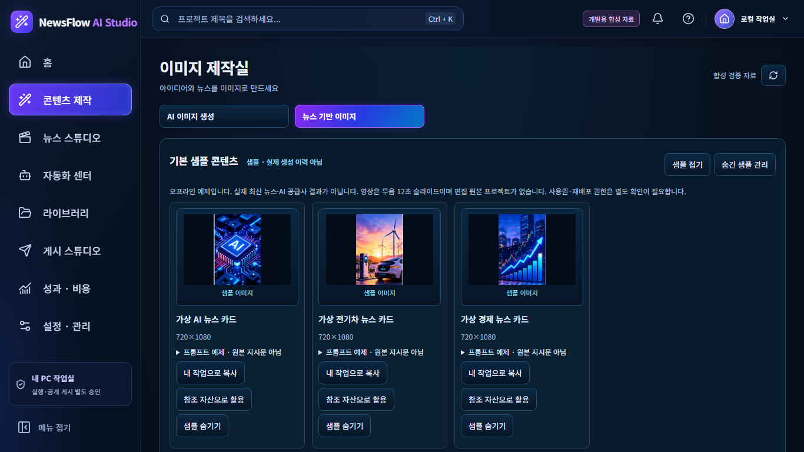
캐릭터 쇼츠
1920px viewport
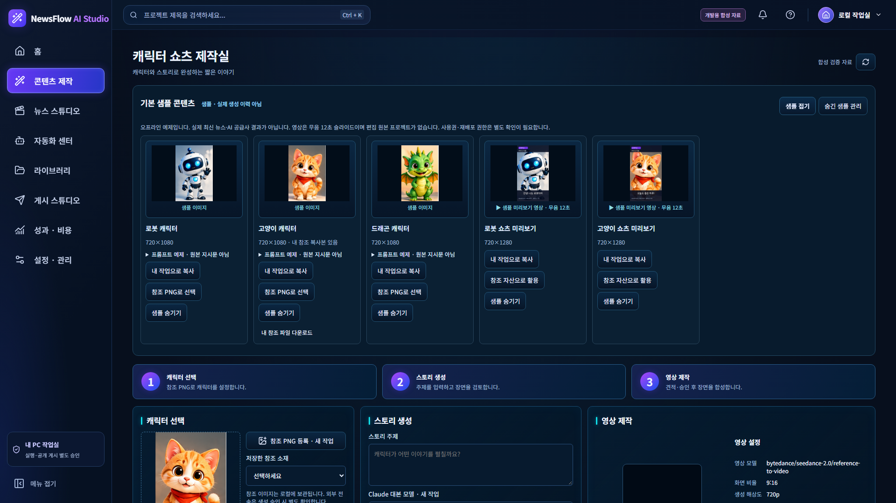
1366px viewport
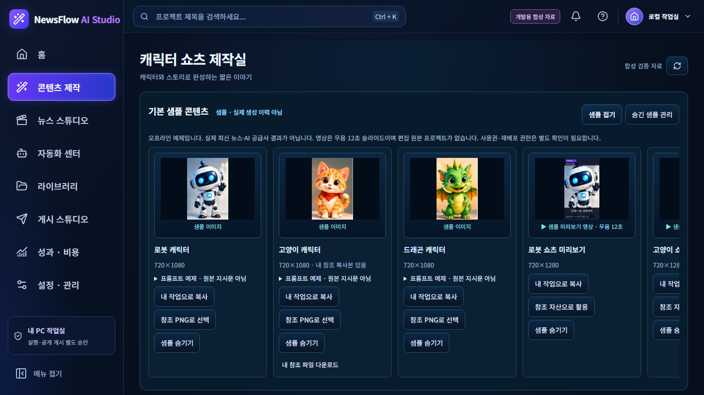
뉴스 쇼츠
1920px viewport
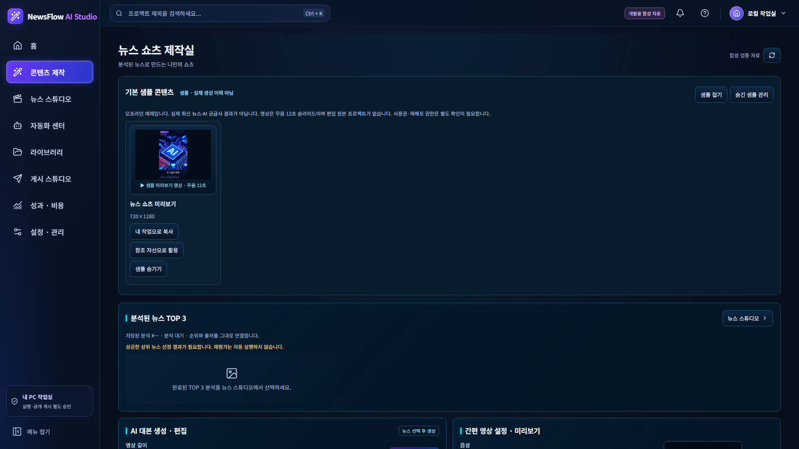
1366px viewport
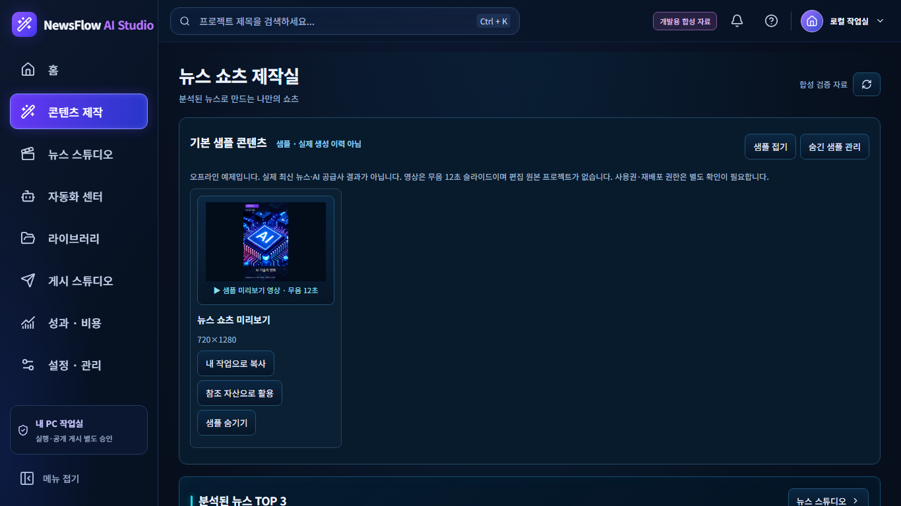
라이브러리
1920px viewport
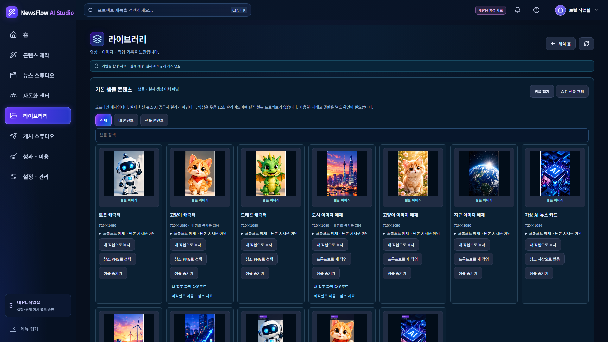
1366px viewport
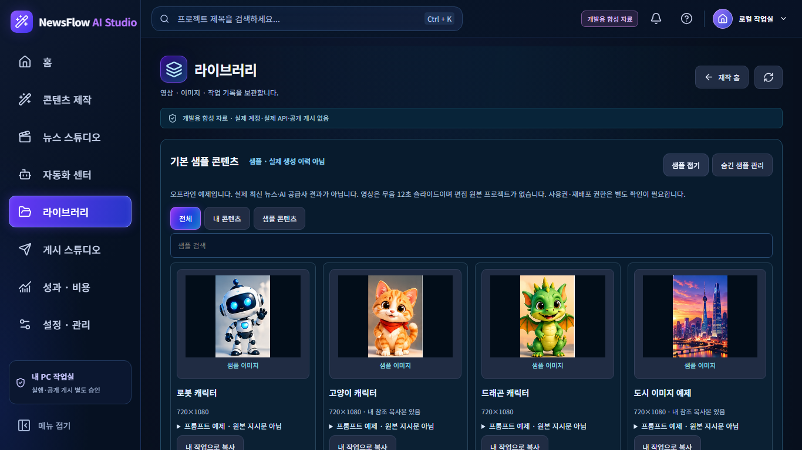
news-short 실제 재생·탐색
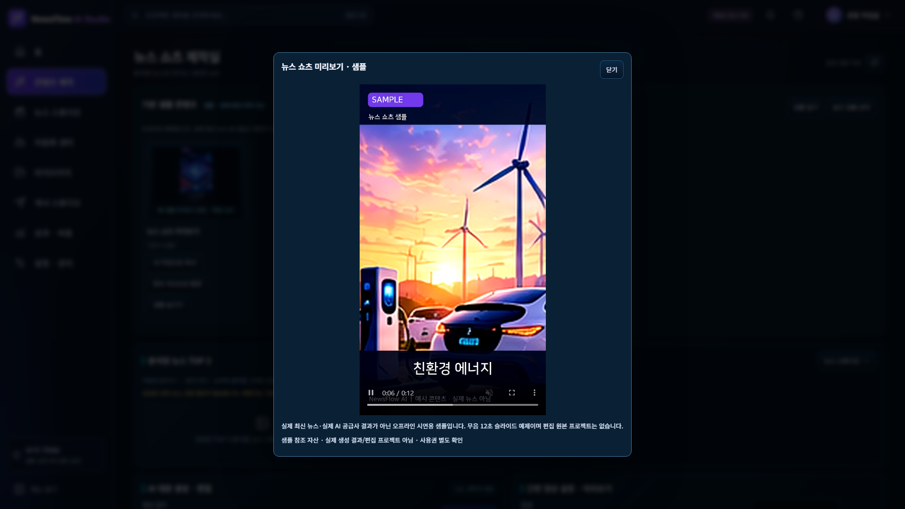
character-short-robot 실제 재생·탐색
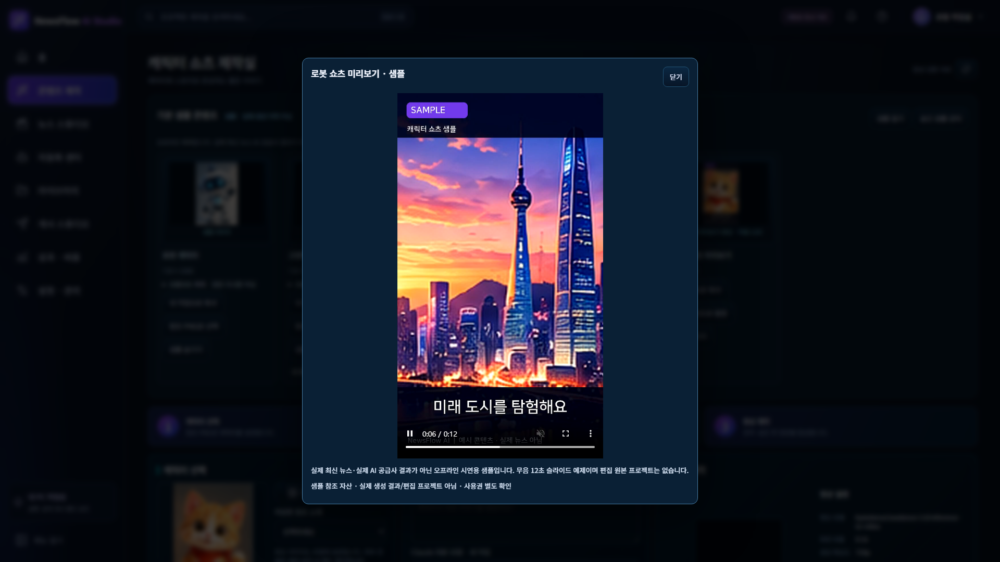
character-short-cat 실제 재생·탐색
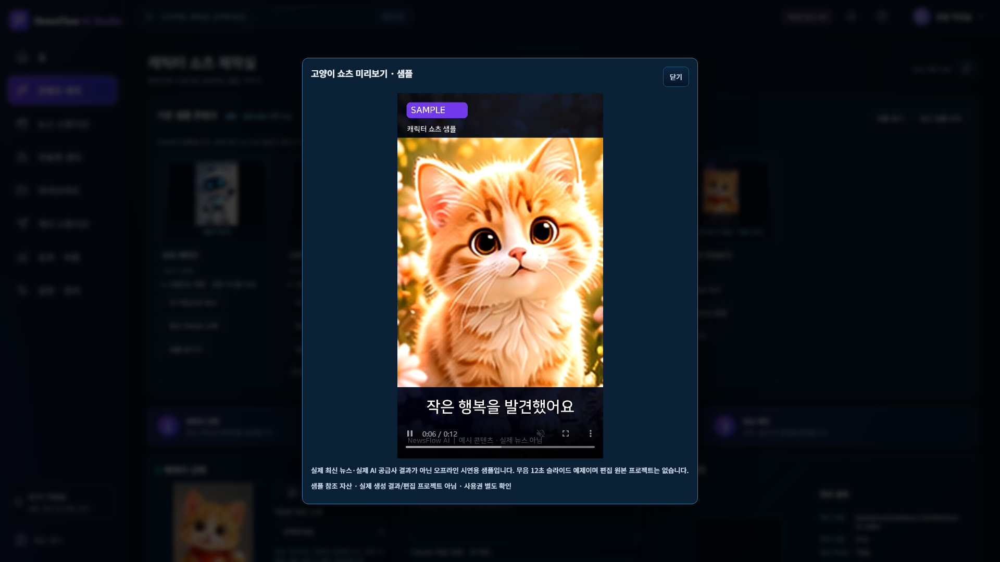